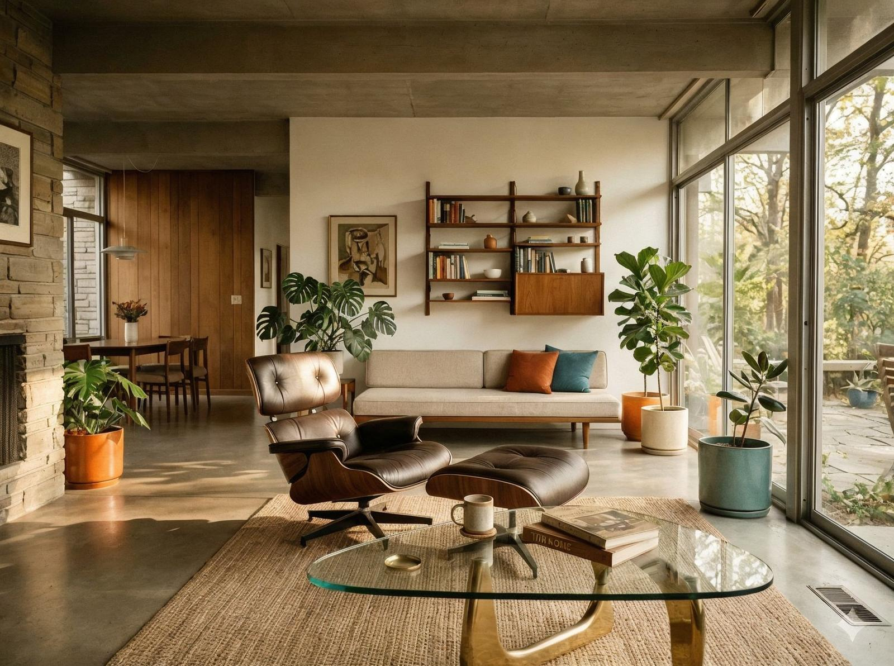
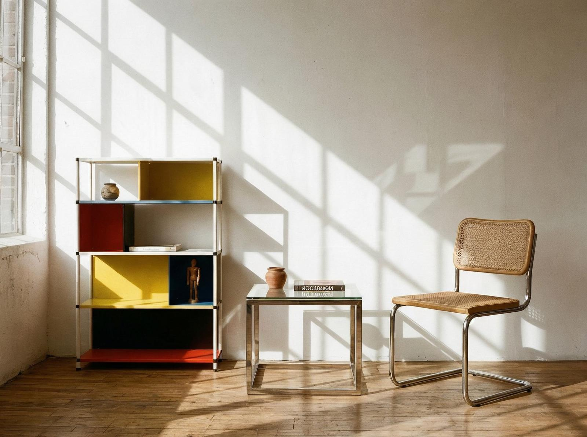

Modernismul e simplu. Funcționalitate clară, forme geometrice, materiale noi. E un stil care a respins ornamenții și a îmbrățișat simplitatea.
Și totuși e complex.
Tensiunea centrală a modernismului nu e simplitate, e reinventare. Nu e despre simplificare, e despre redefinire. Modernismul nu a respins frumusețea, a redefinit-o.

Uită-te mai atent. Modernismul e o revoluție. A respins ornamenții, dar a îmbrățișat funcționalitatea. A respins tradiția, dar a îmbrățișat inovația. A respins complexitatea, dar a îmbrățișat simplitatea.
E un detaliu pe care îl simți înainte să îl vezi. Când te uiți la un obiect modernist, simți progres, simți inovație, simți viitor. Nu e doar un obiect, e o experiență.
Și asta nu e întâmplător. Modernismul e o filosofie, nu doar un stil. E despre cum gândești, nu doar cum arăți. E despre cum inovezi, nu doar cum decorezi.

Complicația e că modernismul e criticat — e rece, e steril, e lipsit de suflet. Dar criticile nu înțeleg funcția modernismului. Nu e despre rece, e despre progres. Nu e despre steril, e despre inovație. Nu e despre lipsit de suflet, e despre gândire.
Modernismul e funcțional, nu decorativ. E inovativ, nu tradițional. E gânditor, nu sentimental.